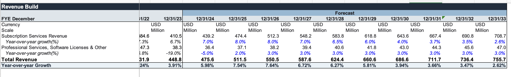
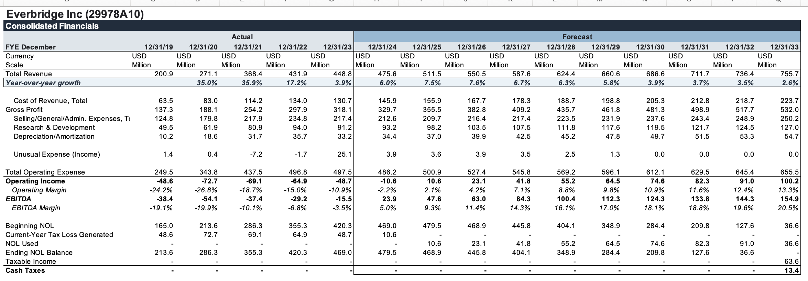
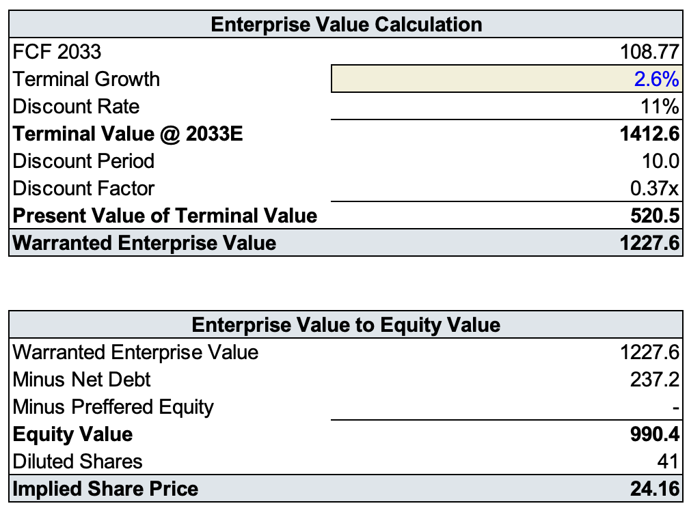
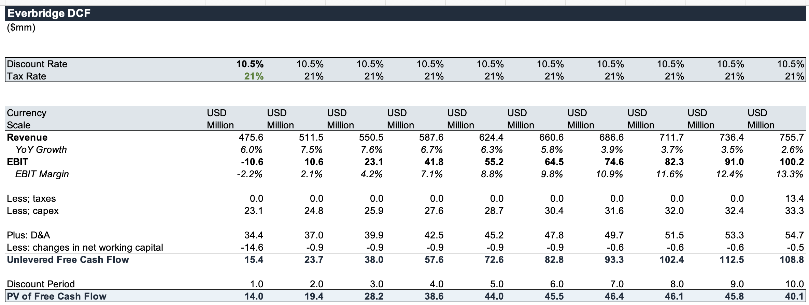
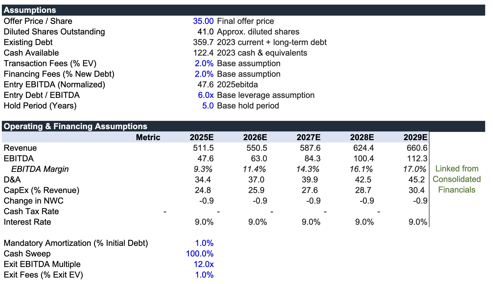
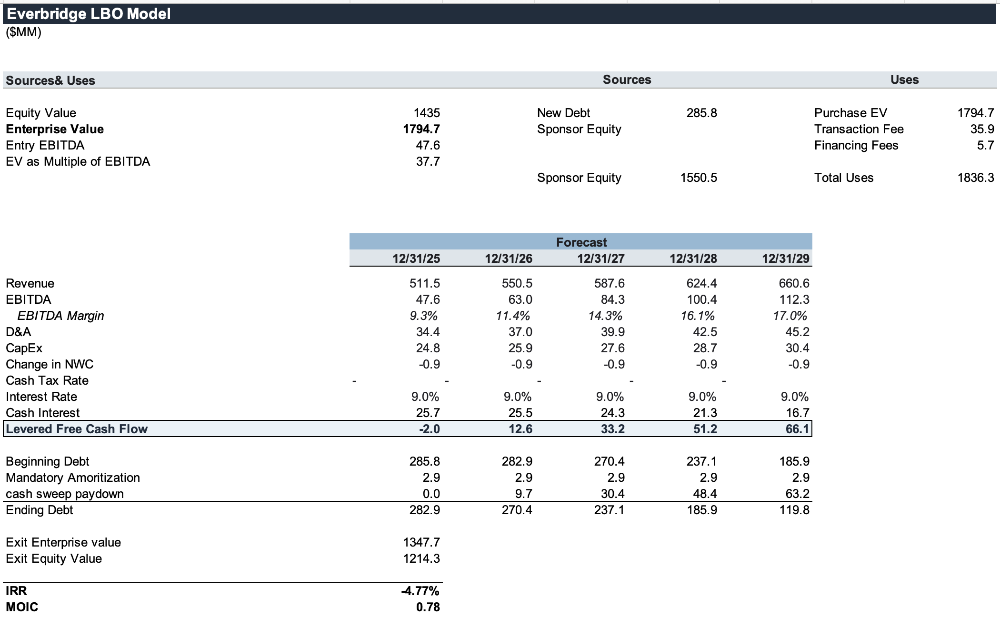
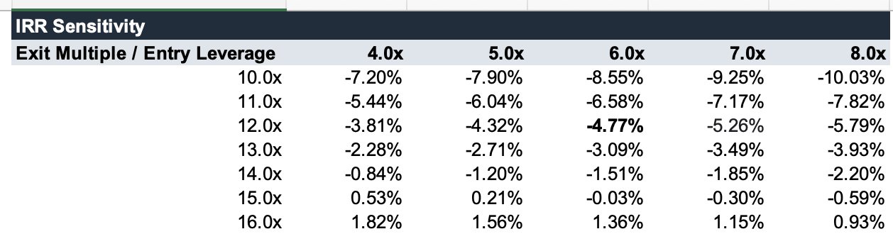

Everbridge / Thoma Bravo
In my quest to become proficient in the tech DCF, I found an acquired public company that captivated my attention. Everbridge, acquired for $1.8B in 2024, was advised by Qatalyst Partners, while Thoma Bravo was advised by Raymond James. Everbridge is a company operating in critical event management. What that means is that when something serious happens, like a public health emergency or natural disaster, they warn both the employees that could be affected and help organizations coordinate their response. Thoma Bravo is a private-equity firm that specializes heavily in software with $181B AUM. Although the transaction is no longer recent, it is perfect for the purposes of learning.
Everbridge fits Thoma Bravo’s portfolio perfectly; it is mission-critical with recurring revenue and high customer switching costs. Everbridge typically serves large enterprise and government customers, making its cash flows relatively predictable. I chose to build two models. The first is a DCF in order to determine whether or not Everbridge’s standalone cash-flow potential can justify its 1.8B price. Secondly, I will build another simplified LBO, in order to see what needs to happen for an acceptable return. I also need to learn more about building out LBOs, so this transaction is perfect.
I used Mergent Market Atlas through the University of Utah library to pull financials. God bless our university for supplying us with these resources. I’ve tried to pull data through LLMs and it hallucinates badly for middle-market transactions. The thought of being able to work with Bloomberg/Pitchbook instead of being scrappy is euphoric. I decided to project the data out 10 years until 2033, the data ends at 2023, until terminal value stability is reached. I’ve realized this makes for far better DCFs. Something I noticed immediately when pulling the financials is that operating income was negative for the 5 years of data I pulled. Net operating loss is interesting to model because it can offset future taxable income. This makes a big difference in the DCF, as unlevered cash flow is shielded through taxes. Everbridge does not begin to pay taxes until 2033, when its modeled NOL balance is exhausted.

Truncated to save room.

Reading that alongside the $1.8 billion transaction value may make my transaction difficult to read. However, let me explain my modeling a bit, and what I learned from it. Everbridge’s EBITDA, calculated as operating income + D&A, remained negative throughout the five historical years reviewed. That already represents substantial operating improvement. Furthermore, year-over-year growth slowed to just 3.9% in 2023. Even with optimistic expectations for model drivers and a 2.6% terminal growth rate, the implied share price is only $24.16. Unlevered free cash flow hits $106.6 in 2033, and with a discount rate of 10.5%, warranted enterprise value becomes $1.2B.


There are quite a few factors I may have overlooked. For one, I may have underestimated normalized operating profitability by failing to genuinely remove all nonrecurring expenses. Furthermore, Thoma Bravo may have a much higher adjusted EBITDA. Second, the model does not include sponsor-specific operating improvements. Finally, the model is highly sensitive to terminal value and WACC assumptions.
Thoma Bravo did not necessarily overpay, as their investment likely depended on sponsor-specific operational improvements that are difficult to construct with public information. I thought a natural next step would be to build on an LBO.


Because the transaction closed during 2024, a precise LBO would include a partial-year stub period. To avoid unnecessary timing complexity, I treat 2025 as the first full year of ownership and use 2025E forward EBITDA for entry leverage. The five-year hold therefore runs from 2025 through 2029.
Using the announced transaction value and my standalone operating forecast, the acquisition produces a sub-1.0x MOIC and negative IRR. Given my earlier projections this makes sense. The result suggests that Thoma Bravo’s underwriting likely relied on substantially higher adjusted EBITDA, accelerated margin expansion, or additional operational improvements not captured in my standalone forecast. I assumed a full cash sweep. I also assumed an exit EBITDA multiple of 12x, hold period of 5 yrs, and entry debt / EBITDA of 6.0x. Although 12x is on the lower side of fast-growing software companies, it is more defensible given its slowing growth, historical losses, and still-developing margin profile.

I built out a sensitivity model to see how varying leverage and exit multiple amounts change the IRR. Something interesting occurred: the return actually got worse as entry leverage increased. This can be explained by the 9% cost of debt being more expensive than any potential returns. Additional borrowing therefore increased interest expense faster than increasing sponsor returns.
My conclusion is that the transaction probably was not underwritten on standalone cash flow alone. The DCF comes in light, and the LBO only works if you give Thoma Bravo credit for a much cleaner EBITDA base, real operating improvement, and a better margin profile than what public filings alone would imply. That does not mean the deal was bad; it just means this is a sponsor transaction where the edge likely comes from execution rather than from buying a statistically cheap public company.